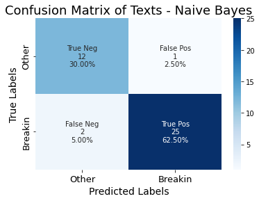
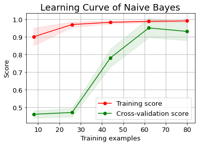
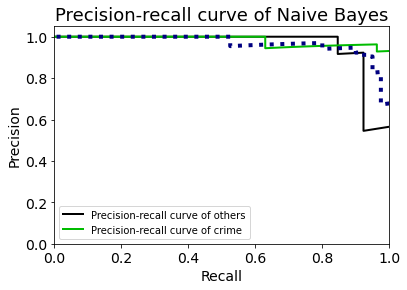

from sklearn.naive_bayes import MultinomialNB
from sklearn.feature_extraction.text import CountVectorizer
from sklearn.model_selection import train_test_split
import pandas as pd
import numpy as npdata = pd.read_csv("../../data/01-modified-data/breakin_prediction.csv",encoding ='latin1')
data| text | label | |
|---|---|---|
| 0 | no mention yet of the Libs own lawyer resignin... | 0 |
| 1 | I want Spidey back. After NWH, my heart broken... | 0 |
| 2 | The owner of a Vancouver butcher shop is calli... | 0 |
| 3 | He had thought she looked cool her eyes shone ... | 0 |
| 4 | nose got broken at a show he popped it back in... | 0 |
| ... | ... | ... |
| 95 | For those without a calculator, thatÕs a getti... | 1 |
| 96 | dreamt someone stole my catalytic converter. W... | 1 |
| 97 | To the lady who had her rear window smashed in... | 1 |
| 98 | donÕt leave anything visible in your car. It w... | 1 |
| 99 | Just broke a blue car's window to take some fr... | 1 |
100 rows × 2 columns
y=data["label"]
#count the frequency of words
vectorizer = CountVectorizer()
matrix = vectorizer.fit_transform(data.text)
X = pd.DataFrame(matrix.toarray(),columns=vectorizer.get_feature_names_out())#divide the data
X_train, X_test, y_train, y_test = train_test_split(X, y, test_size=0.4)# build and fit the model
clf = MultinomialNB()
clf.fit(X_train, y_train)
y_predict=clf.predict(X_test)
predicted_probas = clf.predict_proba(X_test)#calculate the accuracy rate
from sklearn.metrics import accuracy_score
accuracy_score(y_test.values,y_predict)0.925#calculate the confusion matrix
from sklearn import metrics
import matplotlib.pyplot as plt
import seaborn as sns
cf=metrics.confusion_matrix(y_test.values, y_predict)
cfarray([[12, 1],
[ 2, 25]])# visualize the confusion Matirx
# customize the anno
group_names = ["True Neg","False Pos","False Neg","True Pos"]
group_counts = ["{0:0.0f}".format(value) for value in cf.flatten()]
group_percentages = ["{0:.2%}".format(value) for value in cf.flatten()/np.sum(cf)]
labels = [f"{v1}\n{v2}\n{v3}" for v1, v2, v3 in zip(group_names,group_counts,group_percentages)]
labels = np.asarray(labels).reshape(2,2)
#plot the heatmap
fig=sns.heatmap(cf, annot=labels, fmt="", cmap='Blues')
plt.title("Confusion Matrix of Texts - Naive Bayes",fontsize=18)
fig.set_xticklabels(["Other","Breakin"],fontsize=13)
fig.set_yticklabels(["Other","Breakin"],fontsize=13)
fig.set_xlabel("Predicted Labels",fontsize=14)
fig.set_ylabel("True Labels",fontsize=14)
plt.show()
heatmap = fig.get_figure()
heatmap.savefig("../../501-project-website/images/confusion_matirx_text_naive_bayes",facecolor=fig.get_facecolor())
#plot the learning Curve
import scikitplot as skplt
probas_list=[y_predict]
clf_names=["Naive Bayes"]
a=skplt.estimators.plot_learning_curve(clf, X, y,text_fontsize=13)
plt.title("Learning Curve of Naive Bayes",fontsize=18)
plt.show()
curve=a.get_figure()
curve.savefig("../../501-project-website/images/learning_curve_text_naive_bayes",facecolor=fig.get_facecolor())
#plot the Precision-recall curve
skplt.metrics.plot_precision_recall(y_true=y_test, y_probas=predicted_probas,text_fontsize=14)
plt.legend(['Precision-recall curve of others',"Precision-recall curve of crime"])
plt.title("Precision-recall curve of Naive Bayes",fontsize=18)
plt.xlabel("Recall",fontsize=14)
plt.ylabel("Precision",fontsize=14)
plt.savefig("../../501-project-website/images/PR_curve_naive_bayes",facecolor=fig.get_facecolor())